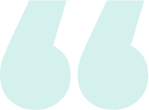

Nehezen tudod megtartani az ideális testsúlyod, vagy folyamatosan küzdesz a súlygyarapodással?
Úgy érzed, a mindennapi kihívások túlterhelnek, és gyakran érzed magad feszültnek, idegesnek?
Kevésbé vagy elégedett a külsőddel és a fizikai állóképességeddel?
Ha neked is ismerősek ezek a problémák és eleged van már, hogy nem tudod kihozni magadból a maximumot, akkor itt az ideje, hogy változtass!
A legnagyobb luxus lemondani önmagadról, ne tedd. Ne félj, nem leszel egyedül az úton, én itt leszek, és segítek!
ÉrdekelVideótáramban minden szükséges eszköz a kezedben van, hogy visszaszerezd testi és lelki egyensúlyodat, újra fitt legyél, motivált és nem utolsó sorban elérd az áhított alakod is! Nem számít, hogy kezdő vagy haladó vagy, a videótárban megtalálod a számodra megfelelő edzéseket, amelyekkel fokozatosan érheted el a céljaidat.
Hidd el, a rendszeres edzéssel nemcsak a testedet hozod formába, de napról napra egyre jobb kedvű lehetsz, és több erőd lesz a mindennapi stressz leküzdésére is!
ÉrdekelSzebbnél-szebb helyszíneken várlak teljes test, extra comb-, popsi-, hasizom és élő edzésekkel. Az átalakító programban pedig heti edzésterveket találsz, hogy tudd, merre indulj ideális alakod eléréséhez.
Főzős videóimmal abban is segítek, hogy mit egyél, így a testedzés mellett a megfelelő táplálkozást is beépítheted a mindennapjaidba, ezáltal még hatékonyabban érheted el a kitűzött céljaid.
A gyerekek már fiatal korban megszokhatják a rendszeres mozgást, miközben a közös edzések családi programmá válhatnak. Így a mindennapokban hasznos, szórakoztató és aktív tevékenységekben vehettek részt együtt, mert az egészséges életmódot sosem lehet elég korán elkezdeni!
Segít a mély ellazulásban, csökkenti a stresszt, és harmonizálja a testet és lelket, így hozzájárulva a belső béke és nyugalom eléréséhez.
Átalakító étrend- és edzéstervek, sztártorna rovat, retro videók, challenge-ek és sok más.
Ez a VIDEÓTÁR zseniális ötlet volt!!! Fél éve szültem a második kisfiam és a TORNÁIDnak hála feszesebb vagyok, mint szülés előtt 🙈😂❤️ Brutál jó volt a ma reggeli torna IS!!! ❤️❤️❤️ Köszönjük ezt a 2* 30 percet, mert tényleg igaz, hogy a mai rohanó világban... nem minden nap van az embernek 60-90 perce edzeni.
Idén januárban fizettem elő a videótáradra és kezdtem el ismét update termékeket fogyasztani. Minimum célom az volt, hogy a terhesség előtti 58 kg-ra menjek vissza és kicsit formáljam magam, mert akárhogy is van, azért a terhesség meglátszik egy nő testén :). Hetente egyszer eljárok zumbázni és 3-4-5 alkalommal (ahogy az 5 hónapos kisfiam mellett időm/energiám engedi) nyomom itthon a videótáradból a tornákat 💪 Szuper videók vannak, mindig csemegézek kedvemre valót ❤️ Jelentem, hogy túlteljesítettem a célt, mert most 56-57 kg vagyok, de nincs megállás 😍 Köszönöm, hogy színt viszel a mindennapjaimba a videótáraddal és annyi energiát adsz, hogy azt elmondani nem lehet 😍
Drága Réka 💗 Itt szeretném Neked megköszönni, hogy visszaadtad a hitem, hogy meg tudom csinálni, és elérhetem a céljaim 🙏 A ma reggeli mérlegem -8kg-t mutatott, egy hónap alatt értem ezt el 🙏 Köszönöm, hogy inspirálsz te is, és Norbi is 💗 A cél még messze van, de Veletek könnyű az út. Örülök, hogy visszataláltam hozzátok, és ismét bebizonyosodott, hogy amit TI képviseltek, azzal célokat lehet elérni 💗 Készülök az első Rozsnyais edzésemre, alig várom 🤗 Ölelés nektek, szép nyarat 💗
Az évek során rengeteg emberrel találkoztam, akik szerettek volna változtatni az életükön, de nem találták meg a megfelelő eszközöket vagy támogatást hozzá. Láttam, hogy sokan azért adják fel az életmódváltást, mert nehéz egyedül belevágni, és még nehezebb kitartani. Pontosan ezekre a problémákra keresve megoldást, döntöttem úgy, hogy létrehozok egy online videótárat, ahol bárki, bármikor hozzáférhet mindenhez, amire szükség van ahhoz, hogy pozitív irányba változtasson életén. Ezzel szeretnék minél több embernek segíteni abban, hogy megtapasztalhassa a mozgás és a tudatos életmód erejét, és megtalálja a saját útját a testi és lelki megújuláshoz. Tudom, hogy mindenki képes rá, és a videótár egy olyan eszköz, amely megadja az ehhez szükséges támogatást, inspirációt és útmutatást. Hiszem, hogy együtt minden könnyebb!